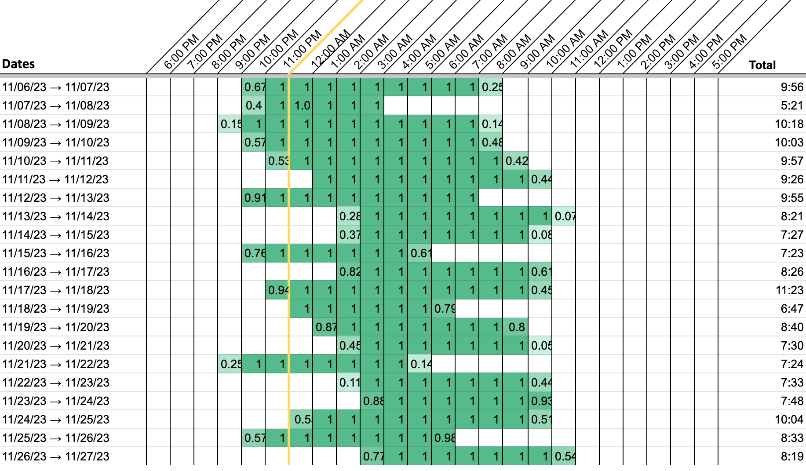
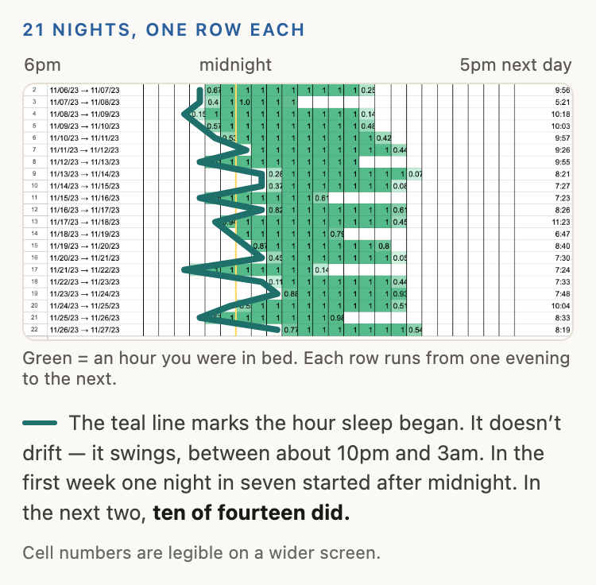

Chart My Sleep
A free sleep chart maker
Paste your sleep data export, get a chart of your real sleep pattern.
See how you actually sleep before you try to fix it.
Two reasons:
- Your sense of how you’ve been sleeping is an impression. This is the record.
- You can’t tell whether a change helped without knowing what came before. This is the before.
You stop guessing at your sleep and start steering it.

How to read it

Four easy steps
- Track your sleep with Sleep Cycle
- Export your data buried in settings How to export from Sleep Cycle →
- Format it here two clicks, in your browser
- Paste into the template Google Sheets draws the chart
First time only
Not tracking yet? Start tonight, come back in a week.
First time only
Opens in a new tab, in your own Google account.
Make your own copy of the template →
The first-time bits you do once. After that it’s export, paste, paste — about two minutes, any time you want an updated chart.